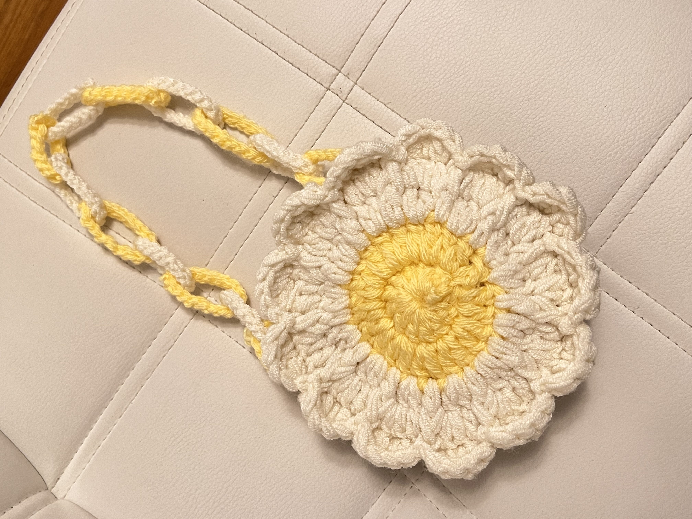
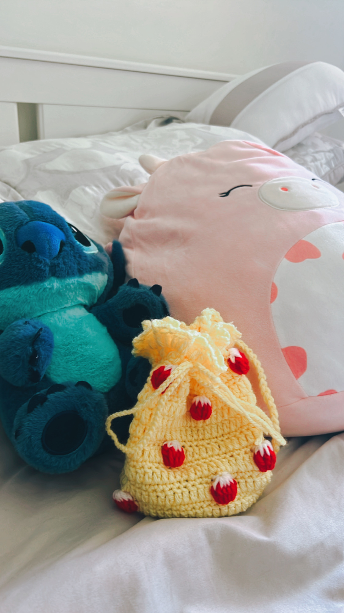
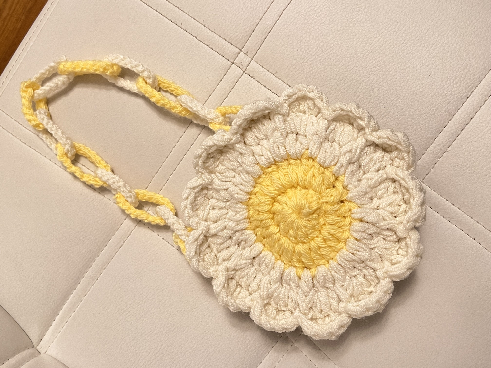
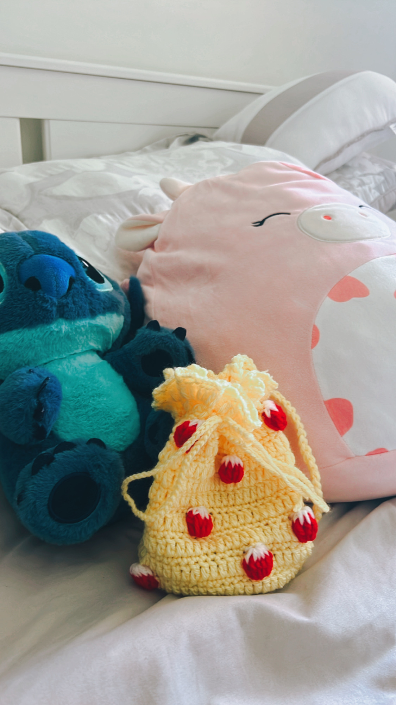

Crocheting is so claming for me. It helps me to relax and I love the feeling of creating somthing from scratch with my hands. It is such a satisfying feeling to see a project come together stitch by stitch. Swimming is my favorite way to stay active and clear my mind. I'll often watch cooking shows. They inspire me to try new receipes and have fun in the kitchen.

 


